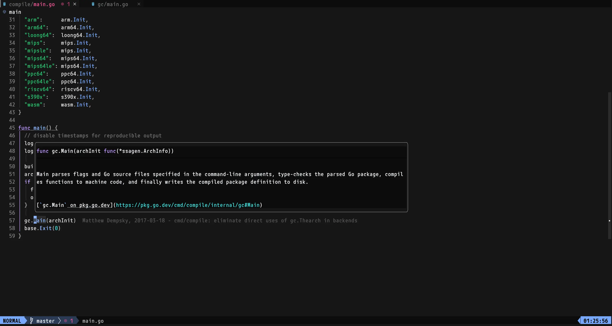

go/src/cmdでLSPが動作するようにするメモ

目次
gc(go compiler)のコード（具体的にはgo/src/cmd/compile
配下）を読むために必要な手順があったのでメモ代わりに書いておく。neovimでしか確認していないが他のエディタでもきっと同じような感じなはず。
packages.Load error: err: exit status 2: stderr: panic: runtime error: index out of range [-1] goroutine 1 [running]: cmd/go/internal/list.collectDepsErrors...⌗
というエラーを出力してLSPが停止する。go1.21.0のバグだった模様。
https://github.com/golang/go/issues/61816
ローカルのgoをgo1.21.1に上げることでエラーが解決した。
Error loading workspace folders (expected 1, got 0) failed to load view for file:///path/to/repo/go/src/cmd: err: exit status 1: stderr: go: downloading go1.22 (darwin/arm64) go: download go1.22 for darwin/arm64: toolchain not available⌗
src/cmd/go.mod の go 1.22をgo 1.21.0に書き換えることで解決した。
diff --git a/src/cmd/go.mod b/src/cmd/go.mod
index 1eaad916ff..da12b2adff 100644
--- a/src/cmd/go.mod
+++ b/src/cmd/go.mod
@@ -1,6 +1,6 @@
module cmd
-go 1.22
+go 1.21.0
require (
github.com/google/pprof v0.0.0-20230811205829-9131a7e9cc17
This file is within module ".", which is not included in your workspace. To fix this problem, you can add a go.work file that uses this directory. See the documentation for more information on setting up your workspace: https://github.com/golang/tools/blob/master/gopls/doc/workspace.md.⌗
リンク先のドキュメントの手順に従ってgo.workを作成する。
// src/cmd ディレクトリで
go work init
go work use ./compile
ということで⌗
無事LSPを動作させることができた。

これでgo本体のコードがサクサク読めるぞー。
Read other posts